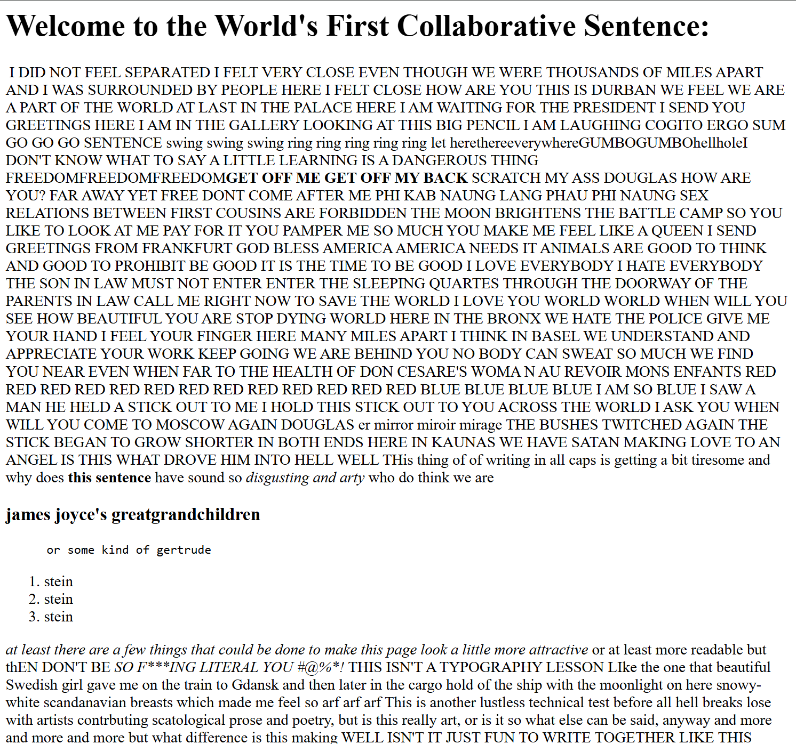
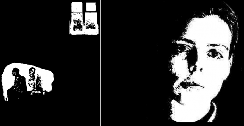
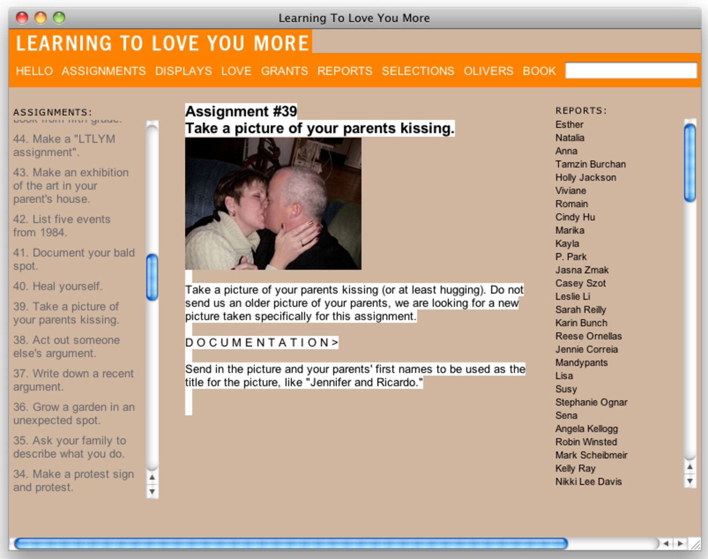

Curated by Kangana Shankar
This exhibition explores human connection through the internet. Especially during and after the pandemic, people's interactions with the internet have become a much larger part of everyday life, and there has also been a growing concern about the lack of in-person interaction and genuine human connection. While I'm not trying to take away from those concerns, I think human connection and human touch still prevail online through the networks we create. In this exhibition, I showcase three net artworks that explore human connection from different angles. Whether it's strangers collaborating on a single piece of writing, users experiencing a story about a relationship and reconnection, or people sharing personal experiences and creative work with others, this exhibition offers a small snapshot of the different ways human connection continues to persist through online networks.

Douglas Davis, 1994
“The World's First Collaborative Sentence” by Douglas Davis is a net art creation made in 1994, as a participatory work that invited internet users to continually add text to a single evolving sentence. It became a collective expression shaped by thousands of contributors and demonstrates how networks can enable collaboration connection between strangers.
Visit Artwork
Olia Lialina, 1996
"My Boyfriend Came Back From the War" by Olia Lialina is an interactive hypertext narrative, made in 1996, that is told through a fragmented series of images, dialogue, and hyperlinks. As users navigate the work, they piece together a story about a couple trying to reconnect after a period of separation.
Visit Artwork
Miranda July and Harrell Fletcher, 2002
“Learning to Love You More” by Miranda July and Harrel Fletcher is a participatory web project created in 2002 that invited people to submit creative assignments online. The resulting collection, after around 7 years, is filled with photographs, recordings, and personal stories from thousands of contributors.
Visit Artwork